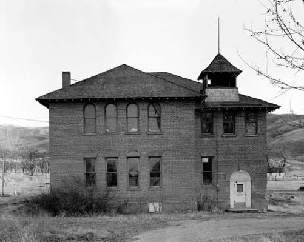
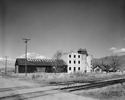
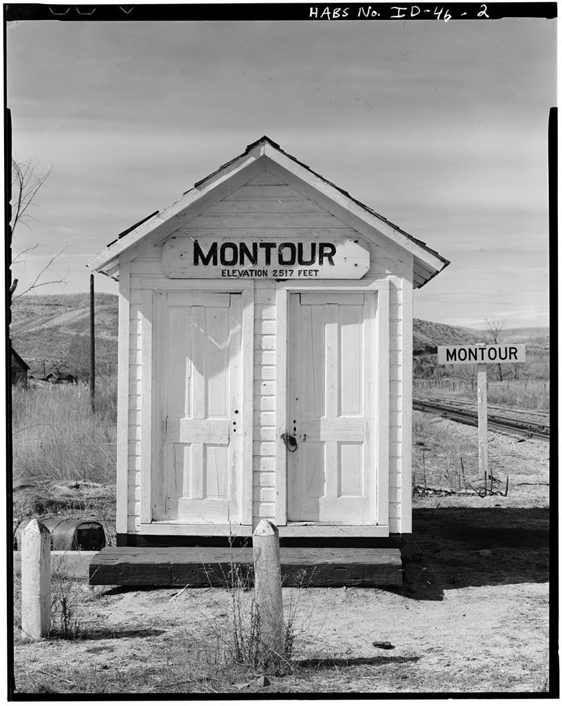

Building community one mile at a time.
The Sunken City Trail 5K was created as a Coby Walker Senior Project to bring together runners, families, and community members while supporting local high school runners. This race takes place in the town of Montour.
Hosted by the Emmett High School Running Club, this race promotes healthy lifestyles, outdoor recreation, and community involvement. All proceeds from this event will help support a high school runners who can't afford shoes, or running fees as to encourage future opportunities for runners of all ages.
The history of Montour has mostly been forgotten overtime. Our vision is to retell its history and downfall. Montour, Idaho was founded around 1912 as a railroad town along the Payette River and was officially platted during that time. At its peak, the population was only around 150–250 people, so it always remained a very small community rather than a large town. In 1924, the construction of the Black Canyon Dam changed the river’s behavior and caused recurring flooding issues in the surrounding valley. By the 1970s, the federal government bought out most of the remaining homes in the floodplain, and the town was largely removed and the land converted to wildlife and recreation areas, which is why it no longer exists as an active town today.


